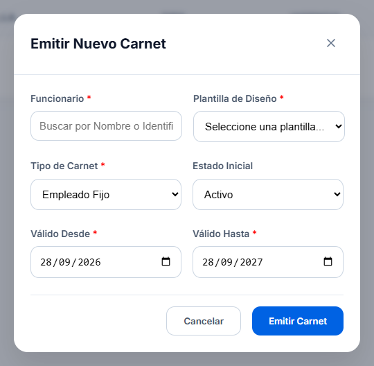

Emisión en Tiempo Real
Generador interactivo de carnets tipo PVC digital. Permite capturar fotografía, nombres, cargo, documento y código QR con actualización visual inmediata.
Acceder al Emisor →Moderniza la identificación institucional. Emite credenciales electrónicas seguras con código QR dinámico, validación de estado en tiempo real y soporte para colaboradores, contratistas y estudiantes.
Explora las funcionalidades integradas del ecosistema de carnetización digital CoreCredential.

Generador interactivo de carnets tipo PVC digital. Permite capturar fotografía, nombres, cargo, documento y código QR con actualización visual inmediata.
Acceder al Emisor →Comprueba la vigencia de cualquier carnet digital expedido. Detecta al instante si una credencial se encuentra activa, suspendida o expirada.
Probar Validador →Canal de soporte técnico institucional y resolución de dudas frecuentes para la administración y configuración de credenciales digitales.
Contactar Soporte →Sigue esta secuencia ordenada para generar y verificar una credencial institucional en el sistema:
Ingresa los datos personales del colaborador, número de identificación oficial y carga su fotografía de perfil en formato digital.
Selecciona el área de adscripción, sede corporativa, grupo sanguíneo y la tipología de carnet (Corporativo, Contratista o Estudiantil).
El motor genera un código QR exclusivo vinculado al código único de carnet para prevenir falsificaciones o duplicaciones físicas.
Se activa el estado de la credencial en la base de datos y queda disponible para su validación instantánea mediante el escáner QR.